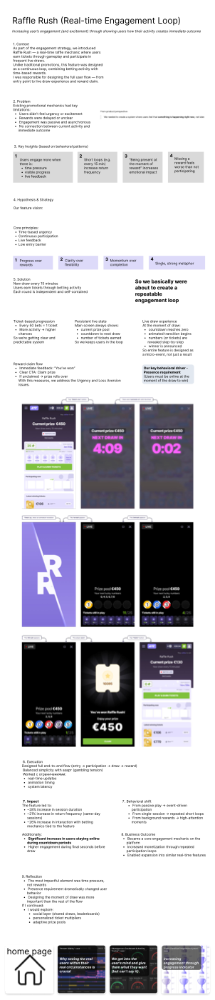

Overview
Design problem
Traditional flows delayed the emotional payoff. Users had to wait, infer, or navigate further before they could understand what just happened.
Case 04
Increasing engagement through an immediate-result loop that keeps the experience alive from one interaction to the next.
This concept explored how instant outcomes and lightweight replay dynamics can drive a stronger participation rhythm on mobile.

Overview
Traditional flows delayed the emotional payoff. Users had to wait, infer, or navigate further before they could understand what just happened.
Opportunity
The product could feel more alive if the outcome appeared fast, clearly, and in a way that encouraged one more action right away.
Process
I shaped the experience around a simple principle: compress the time between action and emotional response. That meant reducing dead moments and amplifying the clarity of the result state.
Artifacts
Solution
The interaction centers the reward state and uses it as the bridge into the next participation moment.
Impact
A faster emotional payoff creates a clearer reason to keep going and supports stronger short-loop engagement.
Takeaway
In engagement products, timing is not decoration. It is a core part of the user experience and the business outcome.